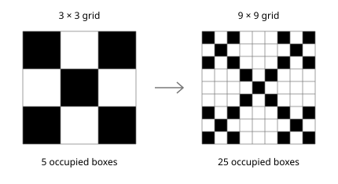

Brainwaves & Illustration
I studied how illustration complexity shapes the coloring experience. The Fractal Dither Tool applies that way of measuring complexity to photos you can turn into patterns.
- Scope
- EEG research · Generative illustration
- Methods
- Wearable EEG · Box-counting
- Interaction
- Photo dithering and halftone
- Status
- Exploratory prototype
Measuring the complexity of a drawing
For my master's research, I wanted to see whether the amount of detail in a drawing changes the experience of coloring it. I designed 36 geometric and figurative mandalas, keeping each motif recognizable while varying its linework.
I used box counting in ImageJ to estimate fractal dimension (D). The method counts how many grid squares touch the linework at several scales. I used the resulting estimates to group the drawings by complexity.

What the study found
In a coloring experiment with 120 fifth- and sixth-grade students, the high-complexity group had higher headset-reported relaxation scores than the low and medium groups. Attention scores showed no significant difference across the three groups. Medium complexity was preferred overall.
Journal publication
I co-authored this 2017 journal article with Cheng-Hung Wang. It reports a separate EEG study on coloring in young adults.
Fractal Dither Tool
In the study, I measured D to group finished drawings. Here, you can use the same idea to shape a pattern. Choose a dither or halftone effect for the flower photo and watch the estimated D update. The Low, Medium, and High controls adjust brightness toward the study's reference ranges.
The original study tested mandala coloring. The effects of viewing these photo patterns remain untested, and the browser's D estimates have yet to be calibrated against the ImageJ measurements.